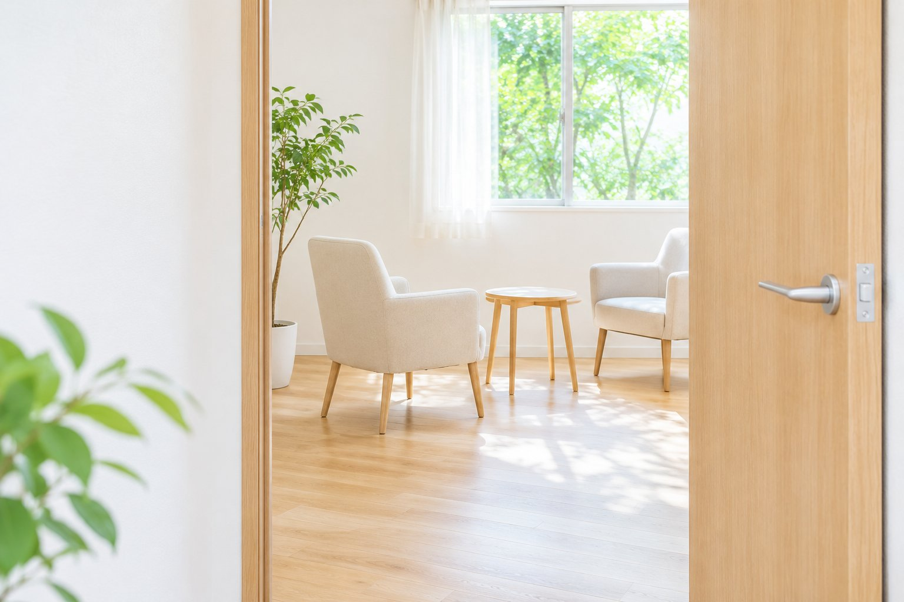

医療・心理・形而上学の融合で本来の光へからだ・心・魂の調和をサポート
- 看護師歴
25年 - 医療・心理・
ヒーリング - 子育ての
ご相談も
 代表飯野 敦子
代表飯野 敦子Sokay Kamuy
私たちについて


からだ・心・魂に、
耳を傾ける時間。
子どもに「大丈夫」と言ってあげたい日ほど、自分の気持ちは後回しになっているかもしれません。心のこと、からだのこと、子育てのこと。ご自身が話したいところからお聞かせください。
私たちについて →Sessions
メニュー

自分の可能性に目を向ける、対面のヒーリング。
DNAアクティベーション®
手当てを通して、からだに意識を向ける時間。
エンソフィック

子どもにかける言葉を、勇気づけの視点から。
アドラー心理学

静かに座り、自分の内側へと意識を向ける時間。
瞑想
Journal
ブログ

ご相談の前に、話したいことをひとつ
初めて相談するとき、何を用意すればよいのでしょう。話のきっかけになる短いメモをご紹介します。

子どもの話を、もう少し聞いてみる
勇気づけを考える入口として、親子の会話の中で相手の言葉を待つ場面を取り上げます。
静かに座る場所を選ぶ
椅子の向きや窓からの光。静かな時間を過ごす場所について考えてみました。

セッションにあたってのご案内
本セッションは、治療や症状の改善を目的とした医療行為ではありません。セッションの効果には個人差があり、特定の効果や結果を保証するものではありません。
DNAアクティベーション®の参加条件
対面のみで、遠隔・オンラインではお受けいただけません。施術はMMS認定の公認ヒーラーに限られます。16歳未満の方はお受けいただけません。16歳以上の未成年の方には保護者の同意書が必要です。
DNAアクティベーション®はモダンミステリースクールの登録商標です。
Contact